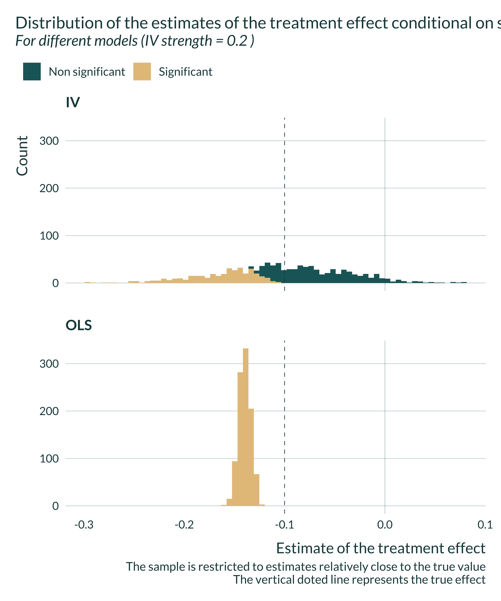
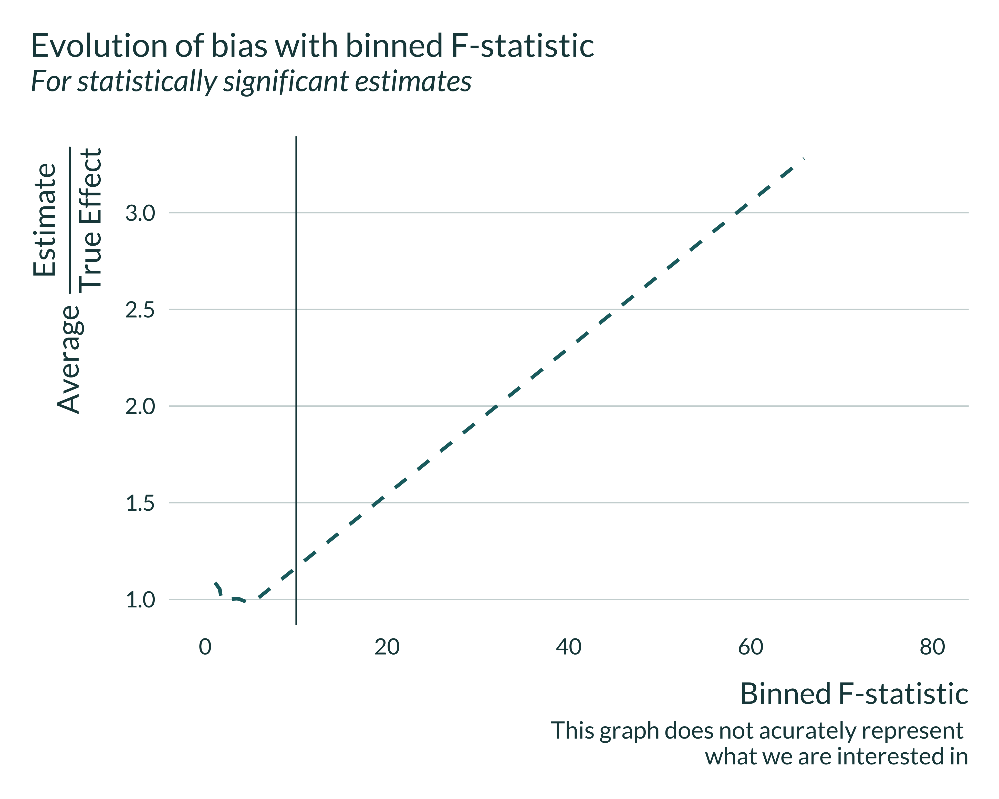

Intuition
In the case of the IV, the unconfoundedness / exaggeration trade-off is mediated by the strength of the instrument considered. When the instrument only explains a limited portion of the variation in the explanatory variable, the IV can still be successful in avoiding confounders but power can low, potentially leading to exaggeration issues to arise.
Simulation framework
Illustrative example
To illustrate this loss in power, we could consider a large variety of settings, distribution of the parameters or parameter values. I narrow this down to an example setting, considering only one setting and one set of parameter values. I examine an analysis of the impact of voter turnout on election results, instrumenting voter turnout with rainfall on the day of the election. My point should stand in more general settings and the choice of values is mostly for illustration.
A threat of confounders often arises when analyzing the link between voter turnout and election results. To estimate such an effect causally, one can consider exogenous shocks to voter turnout such as rainfall. Some potential exclusion restriction problems have been highlighted in this instance Mellon (2021) but I abstract from them and simulate no exclusion restriction violations here.
Modeling choices
For simplicity, I make several assumptions:
- Observations are at the location level,
- Abstract from the panel dimension in this analysis and consider only one time period. This is could be considered as looking at the outcomes of a unique election,
- Only consider the impact of rain on the day of the election,
- Assume no correlation in rainfall between locations. This could be equivalent to considering only a set of remote locations,
- Assume simplify the data generating process and thus do not add any exclusion restriction violations.
The DGP can be represented using the following Directed Acyclic Graph (DAG):
Show code
library(ggdag)
second_color <- str_sub(colors_mediocre[["four_colors"]], 10, 16)
dagify(S ~ T + w + u,
T ~ R + w + e,
exposure = c("S", "T", "R", "w"),
# outcome = "w",
latent = c("u", "e"),
coords = list(x = c(S = 3, T = 2, w = 2.5, R = 1, e = 1.6, u = 3),
y = c(S = 1, T = 1, w = 0, R = 1, e = 0.7, u = 1.5))
) |>
ggdag_status(text_size = 5) +
theme_dag_blank(base_family = "Lato", legend.position = "none") +
scale_mediocre_d(pal = "coty") +
annotate(#parameters
"text",
x = c(2.5, 1.5, 2.8, 2.2),
y = c(1.1, 1.1, 0.45, 0.45),
label = c("beta", "pi", "delta", "gamma"),
parse = TRUE,
color = "black",
size = 5
) The DGP for the vote share of lets say the republican party in location \(i\), \(Share_i\), is defined as follows:
\[Share_{i} = \beta_{0} + \beta_{1} Turnout_{i} + \delta w_{i} + u_{i}\]
Where \(\beta_0\) is a constant, \(w\) represents an unobserved variable and \(u \sim \mathcal{N}(0, \sigma_{u}^{2})\) noise. \(\beta_1\) is the parameter of interest. Lets call it treatment effect. Note that parameters names are consistent with the maths section and the other simulation exercises.
The DGP for the turnout data is as follows:
\[Turnout_{i} = \pi_0 + \pi_1 Rain_{i} + \gamma w_{i} + e_{i}\]
Where \(\pi_0\) is a constant, \(Rain\) is either a continuous variable (amount of rain in location \(i\) on the day of the election) or a dummy variable (whether it rained or not) and \(e \sim \mathcal{N}(0, \sigma_{e}^{2})\) noise. Lets refer to \(\pi_1\) as IV strength.
The impact of voter turnout on election outcome (share of the republican party) is estimated using 2 Stages Least Squares.
More precisely, lets set:
- \(N\) the number of observations
- \(Rain \sim \text{Gamma}(k, \theta)\), \(Rain \sim \mathcal{N}(0, \sigma_{R}^{2})\) or \(Rain \sim \text{Bernoulli}(p_R)\) the instrument
- \(w \sim \mathcal{N}(0, \sigma_{w}^{2})\) the unobserved variable
- \(u \sim \mathcal{N}(0, \sigma_{u}^{2})\)
- \(e \sim \mathcal{N}(0, \sigma_{e}^{2})\) with \(\sigma_{e}^{2}\) depending on \(\pi_1\) and defined such that \(\sigma_{Turnout}^{2}\) does not vary when we vary \(\pi_1\): \(\sigma_{e}^{2} = \sigma_{Turnout}^{2} - \pi_1^{2} \sigma_{Rain}^2 - \gamma^2\sigma_w^2\)
- For simplicity, I assume that \(\delta = -\gamma\). There is no actual basis for that and we may change that in the future. The minus sign is just to get an upward bias, which makes the comparison between OLS and IV easier since the bias and the exaggeration go in the same direction.
If one abstracts from the name of the variable, they can notice that this setting is actually very general.
Data generation
Generating function
Lets first write a simple function that generates the data. It takes as input the values of the different parameters and returns a data frame containing all the variables for this analysis.
Note that the parameter type_rain describes whether \(Rain\) is a random sample from a normal or Bernoulli distribution. The distributions of rainfall heights can be approximated with a gamma distribution. The Bernoulli distribution is used if one only consider the impact of rain or no rain on voter turnout. A normal distribution does not represent actual rainfall distributions but is added to run these simulations in other contexts than linking rainfall, voter turnout and election outcomes.
type_rain can take the values gamma, bernoulli or normal. param_rain represents either \(\sigma_R\) if \(Rain\) is normal, \(p_R\) if it is Bernoulli or a vector of shape and scale parameters for the gamma distribution.
generate_data_iv <- function(N,
type_rain, #"gamma", "normal" or "bernoulli"
param_rain,
sigma_w,
sigma_share,
sigma_turnout,
beta_0,
beta_1,
pi_0,
pi_1,
delta,
gamma = -delta) {
if (type_rain == "bernoulli") {
rain_gen <- rbinom(N, 1, param_rain[1])
sd_rain <- sqrt(param_rain[1]*(1-param_rain[1]))
} else if (type_rain == "normal") {
rain_gen <- rnorm(N, 0, param_rain[1])
} else if (type_rain == "gamma") {
rain_gen <- rgamma(N, shape = param_rain[1], scale = param_rain[2])
sd_rain <- sqrt(param_rain[1]*param_rain[2]^2)
} else {
stop("type_rain must be either 'bernoulli', 'gamma' or 'normal'")
}
data <- tibble(id = 1:N) %>%
mutate(
rain = rain_gen,
w = rnorm(nrow(.), 0, sigma_w),
sigma_rain = sd_rain,
sigma_e = sqrt(sigma_turnout^2 - pi_1^2*sigma_rain^2 - gamma^2*sigma_w^2),
e = rnorm(nrow(.), 0, sigma_e),
turnout = pi_0 + pi_1*rain + gamma*w + e,
sigma_u = sqrt(
sigma_share^2
- beta_1^2*sigma_turnout^2
- delta^2*sigma_w^2
- 2*beta_1*delta*gamma*sigma_w^2
),
u = rnorm(nrow(.), 0, sigma_u),
share = beta_0 + beta_1*turnout + delta*w + u
)
return(data)
}Calibration and baseline parameters values
We can now set baseline values for the parameters to emulate a somehow realistic observational study. I get inspiration for the values of parameters from Fujiwara, Meng, and Vogl (2016) and Cooperman (2017) who replicates a work by Gomez, Hansford, and Krause (2007).
I consider that:
- Number of observations: We consider data at the US county level as in Hansford and Gomez (2010) and Fujiwara, Meng, and Vogl (2016). The former use data for presidential elections between 1948 and 2000, restricting their sample of counties to non-Southern ones (2000 per election year). That leads to a sample size of 28000. The latter data for presidential elections between 1952 and 2012 leading to a sample size of about 50000. I thus consider 30000 observations.
- Rainfall distribution: A gamma distribution represents well the distribution of rainfall. Gamma distribution can have two parameters a shape and a scale. The mean is \(shape \times scale\) and the variance \(shape \times scale^{2}\). The parameters of the distribution of rainfall are comparable in both Fujiwara, Meng, and Vogl (2016) and Cooperman (2017) after a conversion into centimeters: mean 2.4 and standard deviation 6.6. I solve the system of mean and variance for shape and scale and set param_rain to 0.13 and 18.
- Standard deviation of the omitted variable is set to be of the order of magnitude of the error terms. Being conservative, lets set its intensity to be twice as large as the treatment effect.
- Effect of rainfall on turnout: Fujiwara, Meng, and Vogl (2016) find that The trends specifications suggest that 1 millimeter of rainfall decreases turnout by 0.050.07 percentage points and Gomez, Hansford, and Krause (2007) (and thus Cooperman (2017)) find a county that receives one inch of rainfall on election day is likely to have approximately 1 percentage point lower voter turnout which is equivalent to a 1mm increase in rainfall is associated with about a 0.04 percentage points decrease in voter turnout. For simplicity in interpretation, when rainfall is not a dummy, I express in centimeters. So, I consider pi_1 in the range -0.1 and -1.3, assuming linearity.
- Effect of interest (turnout on vote share): it is subject to intense debate in the literature (cf Shaw and Petrocik (2020) for instance). As underlined by Shaw and Petrocik (2020) and in Fowler (2013), some studies find large effects, others no effects or small effects. Fowler (2013) falls into the large effects category as described by the author himself (Fowler 2015). The study, for an extremely large shock in voter turnout, compulsory voting, finds that the policy increased voter turnout by 24 percentage points which in turn increased the vote shares and seat shares of the Labor Party by 7 to 10 percentage points. This correspond to a decrease in Republican vote share of approximately 0.3-0.4 percentage point when turnout increases by 1% (considering that this result is causal and linear). This effect being large, I consider effects that are smaller but of a similar magnitude: I simulate that when turnout increases by 1%, Republican vote share decreases by 0.1 and thus beta_1 = -0.1
- Effect of the omitted variable. The effect of the omitted variable cannot be observed, I pick it somehow at random such that OVB is substantial without being massive. Since the instrument is valid in these simulations, the IV estimates will not be affected by the intensity of the OVB, only the OLS estimates will (the larger this intensity, the larger the average ratio of the estimate over the true effect).
- Turnout and vote share are expressed in percent. I set intercepts and residual standard deviations to produce turnouts and vote shares consistent with Cooperman (2017) and Fujiwara, Meng, and Vogl (2016). Voter turnout parameters are roughly similar in both papers (mean 58 sd 14). The mean and standard deviation of Republican vote share are given in @Fujiwara, Meng, and Vogl (2016) (mean 55.3 and sd 14.2). Thus, I set sigma_share = 14.2 and sigma_turnout = 14. pi_0 and beta_0 are manually adjusted to get the correct mean of turnout and vote share (for pi_1 in the mid-range of its values)
Lets thus consider the following parameters:
Show the code used to generate the table
| N | type_rain | param_rain | sigma_w | sigma_share | sigma_turnout | beta_0 | pi_0 | beta_1 | pi_1 | delta |
|---|---|---|---|---|---|---|---|---|---|---|
| 30000 | gamma | 0.13, 18.00 | 14 | 14.2 | 14 | 60 | 59 | -0.1 | -0.5 | 0.2 |
Here is an example of data created with this data generating process:
Show the code used to generate the table
| id | rain | w | sigma_rain | sigma_e | e | turnout | sigma_u | u | share |
|---|---|---|---|---|---|---|---|---|---|
| 1 | 0.0000003 | -8.2155639 | 6.489992 | 13.32779 | -19.374254 | 41.26886 | 13.79391 | -10.152007 | 44.07799 |
| 2 | 0.0043522 | -11.0556342 | 6.489992 | 13.32779 | -10.615773 | 50.59318 | 13.79391 | 4.737556 | 57.46711 |
| 3 | 0.0000000 | 22.5030157 | 6.489992 | 13.32779 | -4.907682 | 49.59172 | 13.79391 | 7.707067 | 67.24850 |
| 4 | 4.7328542 | -9.8748770 | 6.489992 | 13.32779 | 5.948958 | 64.55751 | 13.79391 | -4.975409 | 46.59387 |
| 5 | 0.0000863 | -0.4140597 | 6.489992 | 13.32779 | 7.991664 | 67.07443 | 13.79391 | 3.423550 | 56.63329 |
| 6 | 0.0015507 | -5.4276009 | 6.489992 | 13.32779 | -14.015526 | 46.06922 | 13.79391 | -16.858995 | 37.44856 |
| 7 | 0.4799312 | -21.4047656 | 6.489992 | 13.32779 | 21.804853 | 84.84584 | 13.79391 | 1.026430 | 48.26089 |
| 8 | 0.0502115 | -9.3138741 | 6.489992 | 13.32779 | 4.295612 | 65.13328 | 13.79391 | 6.000701 | 57.62460 |
| 9 | 0.0790413 | -2.0722652 | 6.489992 | 13.32779 | 8.420960 | 67.79589 | 13.79391 | -10.664136 | 42.14182 |
| 10 | 0.0009223 | 9.5970450 | 6.489992 | 13.32779 | 2.594389 | 59.67452 | 13.79391 | -15.218752 | 40.73321 |
Exploring the distribution of the data
I just quickly explore the distribution of the data for a baseline set of parameters. For this, I consider a mid-range value for IV strength (-0.5).
Show the code used to generate the graph
ex_data <- baseline_param_iv |>
# mutate(N = 10000) %>%
pmap(generate_data_iv) |>
list_rbind()
ex_data %>%
ggplot(aes(x = turnout)) +
geom_density() +
labs(
title = "Distribution of turnout",
x = "Turnout (in %)",
y = "Density"
) +
xlim(c(0,100))I also check the standard deviation and means of the variables and at the same time verify that they do not do not change when we vary \(\pi_1\). They are consistent with what we wanted:
Show the code used to generate the table
vect_pi_1 <- c(seq(0.1, 1, 0.1))
param_iv <- baseline_param_iv |>
# mutate(N = 100000) |>
select(-pi_1) |>
crossing(vect_pi_1) |>
rename(pi_1 = vect_pi_1)
gen_with_param <- function(...) {
generate_data_iv(...) |>
mutate(pi_1 = list(...)$pi_1)
}
ex_data <- pmap(param_iv, gen_with_param) |>
list_rbind()
ex_data_mean <- ex_data |>
group_by(pi_1) |>
summarise(across(.cols = c(share, turnout, rain), mean)) |>
mutate(stat = "mean")
ex_data_sd <- ex_data |>
group_by(pi_1) |>
summarise(across(.cols = c(share, turnout, rain), sd)) |>
mutate(stat = "sd")
ex_data_mean |>
rbind(ex_data_sd) |>
pivot_wider(names_from = stat, values_from = c(share, turnout, rain)) |>
kable()| pi_1 | share_mean | share_sd | turnout_mean | turnout_sd | rain_mean | rain_sd |
|---|---|---|---|---|---|---|
| 0.1 | 53.99285 | 14.26360 | 59.25917 | 13.96598 | 2.320063 | 6.574221 |
| 0.2 | 54.02406 | 14.23398 | 59.53944 | 14.03234 | 2.367790 | 6.429612 |
| 0.3 | 54.03630 | 14.21791 | 59.76317 | 13.97766 | 2.281051 | 6.138917 |
| 0.4 | 53.89030 | 14.32784 | 59.90097 | 14.01508 | 2.320802 | 6.488280 |
| 0.5 | 53.97445 | 14.20907 | 60.16076 | 13.94800 | 2.304321 | 6.308877 |
| 0.6 | 53.87031 | 14.20107 | 60.37935 | 13.96833 | 2.375658 | 6.579245 |
| 0.7 | 54.01716 | 14.13741 | 60.61198 | 13.88935 | 2.304649 | 6.445715 |
| 0.8 | 53.86835 | 14.26096 | 60.87089 | 13.96232 | 2.322503 | 6.554110 |
| 0.9 | 53.84301 | 14.22424 | 61.17229 | 13.96819 | 2.309919 | 6.503217 |
| 1.0 | 53.74508 | 14.24909 | 61.53484 | 13.99151 | 2.384839 | 6.708181 |
Estimation
After generating the data, we can run an estimation. The goal is to compare the IV and the OLS for different IV strength values. Hence, we need to estimate both an IV and an OLS and return both set of outcomes of interest.
estimate_iv <- function(data) {
reg_iv <- AER::ivreg(data = data, formula = share ~ turnout | rain)
fstat_iv <- summary(
reg_iv,
diagnostics = TRUE
)$diagnostics["Weak instruments", "statistic"]
reg_iv <- reg_iv %>%
broom::tidy() %>%
mutate(model = "IV", fstat = fstat_iv)
reg_OLS <-
lm(data = data, formula = share ~ turnout) %>%
broom::tidy() %>%
mutate(model = "OLS", fstat = NA)
# reg_OLS_unbiased <-
# lm(data = data, formula = share ~ turnout + w) %>%
# broom::tidy() %>%
# mutate(model = "OLS unbiased", fstat = NA)
reg <- reg_iv %>%
rbind(reg_OLS) %>%
# rbind(reg_OLS_unbiased) %>%
filter(term == "turnout") %>%
rename(p_value = p.value, se = std.error) %>%
select(estimate, p_value, se, fstat, model) %>%
return(reg)
}One simulation
We can now run a simulation, combining generate_data_iv and estimate_iv. To do so I create the function compute_sim_iv. This simple function takes as input the various parameters. It returns a table with the estimate of the treatment, its p-value and standard error, the F-statistic for the IV, the true effect, the IV strength and the intensity of the OVB considered (delta). Note that for now, we do not store the values of the other parameters since we consider them fixed over the study.
The output of one simulation, for baseline parameters values is:
Show the code used to generate the table
pmap(baseline_param_iv, compute_sim_iv) |>
list_rbind() |>
kable()| estimate | p_value | se | fstat | model | pi_1 | delta | param_rain | true_effect |
|---|---|---|---|---|---|---|---|---|
| -0.0927705 | 0.0004581 | 0.0264715 | 1542.776 | IV | -0.5 | 0.2 | 0.13, 18.00 | -0.1 |
| -0.1402656 | 0.0000000 | 0.0058481 | NA | OLS | -0.5 | 0.2 | 0.13, 18.00 | -0.1 |
All simulations
I then run the simulations for different sets of parameters by mapping the compute_sim_iv function on each set of parameters. I thus create a table with all the values of the parameters we want to test, param_iv. Note that in this table each set of parameters appears n_iter times as we want to run the analysis \(n_{iter}\) times for each set of parameters.
Finally, I run all the simulations by looping the compute_sim_iv function on the set of parameters param_iv.
Analysis of the results
Quick exploration
First, I quickly explore the results.
Show code
sim_iv <- readRDS(here("Outputs/sim_iv.RDS"))
sim_iv %>%
filter(between(estimate, -1.3, 0.5)) %>%
# filter(delta == sample(vect_delta, 1)) %>%
filter(pi_1 %in% c(0.1, 0.4, 0.6)) %>%
mutate(iv_strength = str_c("IV strength: ", pi_1)) %>%
ggplot(aes(x = estimate, fill = model, color = model)) +
geom_vline(xintercept = unique(sim_iv$true_effect)) +
geom_density() +
facet_wrap(~ iv_strength) +
labs(
title = "Distribution of the estimates of the treatment effect",
subtitle = "For different IV strengths and models",
color = "",
fill = "",
x = "Estimate of the treatment effect",
y = "Density",
caption = "The vertical line represents the true effect"
) +
scale_mediocre_d() 
Show code
sim_iv %>%
filter(between(estimate, -1.2, 1)) %>%
filter(model == "IV") %>%
# filter(delta == sample(vect_delta, 1)) %>%
ggplot() +
# geom_density_ridges(aes(
geom_density(aes(
x = estimate,
# y = pi_1,
color = as.factor(pi_1)),
alpha = 0
) +
geom_vline(xintercept = unique(sim_iv$true_effect)) +
labs(
title = "Distribution of the estimates of the treatment effect",
subtitle = "Comparison across IV strengths",
color = "IV strength",
fill = "IV strength",
x = "Estimate of the treatment effect",
y = "Density",
caption = "For readibility, extreme estimates are filtered out
The vertical line represents the true effect"
)Show code
data_one_sim_iv <- sim_iv %>%
filter(between(estimate, -3, 1)) %>%
filter(pi_1 == 0.2) %>%
# filter(delta == sample(vect_delta, 1)) %>%
mutate(significant = ifelse(p_value < 0.05, "Significant", "Non significant"))
data_one_sim_iv %>%
ggplot(aes(x = estimate, fill = significant)) +
geom_histogram(bins = 70) +
geom_vline(xintercept = unique(sim_iv$true_effect)) +
geom_vline(xintercept = 0, linetype = "solid", alpha = 0.3) +
facet_wrap(~ model, nrow = 3) +
labs(
title = "Distribution of the estimates of the treatment effect conditional on significativity",
subtitle = paste(
"For different models (IV strength =",
unique(data_one_sim_iv$pi_1), ")"
),
x = "Estimate of the treatment effect",
y = "Count",
fill = "",
caption = "The sample is restricted to estimates relatively close to the true value
The vertical doted line represents the true effect"
)
We notice that the OLS is always biased and that the IV is never biased. However, for limited IV strengths, the distribution of the estimates flattens. The smaller the IV strength, the most like it is to get an estimate away from the true value, even though the expected value remains equal to the true effect size.
Computing bias and exaggeration ratios
We want to compare \(\mathbb{E}\left[ \left| \frac{\widehat{\beta_{IV}}}{\beta_1}\right|\right]\) and \(\mathbb{E}\left[ \left| \frac{\widehat{\beta_{IV}}}{\beta_1} \right| | \text{signif} \right]\). The first term represents the bias and the second term represents the exaggeration ratio.
To do so, I use the function summmarise_sim defined in the functions.R file.
Graph
To analyze our results, we build a unique and simple graph:
Show the code used to generate the graph
main_graph_iv <- summary_sim_iv |>
ggplot(aes(x = abs(pi_1), y = type_m, color = model)) +
geom_line(size = 1.2, aes(linetype = model)) +
# geom_point(size = 3) +
labs(
x = "|IV strength|",
y = expression(paste("Average ", frac("|Estimate|", "|True Effect|"))),
color = "Model",
linetype = "Model",
title = "Evolution of bias with intensity of the IV",
subtitle = "For statistically significant estimates"
) +
scale_y_continuous(breaks = scales::pretty_breaks(n = 4)) +
theme_mediocre() +
scale_mediocre_d()
main_graph_iv
We notice that, if the IV strength is low, on average, statistically significant estimates overestimate the true effect. If the IV strength is too low, it might even be the case that the benefit of the IV is overturned by the exaggeration issue. The IV yields an unbiased estimate and enables to get rid of the OVB but such statistically significant estimates fall, on average, even further away from the true effect.
Of course, if one considers all estimates, as the IV is unbiased, this issue does not arise.
Distribution of the estimates
I then graph the distribution of estimates conditional on significativity. It represents the same phenomenon but with additional information.
Show the code used to generate the graph
set_mediocre_all(pal = "coty")
sim_iv |>
filter(model %in% c("IV")) |>
mutate(
signif = ifelse(p_value < 0.05, "Significant", "Non-significant"),
ratio_exagg = estimate/true_effect
) %>%
group_by(pi_1, model) %>%
mutate(
mean_signif = mean(ifelse(p_value < 0.05, ratio_exagg, NA), na.rm = TRUE),
mean_all = mean(ratio_exagg, na.rm = TRUE)
) %>%
ungroup() |>
filter(as_factor(pi_1) %in% seq(0.2, 0.6, 0.1)) |>
ggplot(aes(x = ratio_exagg, fill = "All Estimates")) +
facet_grid(~ pi_1, switch = "x") +
geom_vline(xintercept = 1) +
geom_vline(xintercept = 0, linetype = "solid", linewidth = 0.12) +
scale_x_continuous(breaks = scales::pretty_breaks(n = 6)) +
coord_flip() +
scale_y_continuous(breaks = NULL) +
labs(
y = "|IV strength|",
x = expression(paste(frac("Estimate", "True Effect"))),
fill = "",
title = "Distribution of estimates from 1000 simulated datasets",
subtitle = "Conditional on significativity",
# caption =
# "The green dashed line represents the result aimed for
# "The brown solid line represents the average of significant estimates"
) +
geom_histogram(bins = 100, alpha = 0.85, aes(fill = signif)) +
geom_vline(xintercept = 1) +
geom_vline(
aes(xintercept = mean_signif),
color = "#976B21",
linetype = "solid",
size = 0.5
) Further checks
Representativeness of the estimation
I calibrated the simulations to emulate a typical study from this literature. To further check that the results are realistic, I compare the average Signal-to-Noise Ratio (SNR) of the simulations to the range of SNR of an existing study. The influential study Gomez, Hansford, and Krause (2007) have a SNR of about 8. Yet the reanalysis by Cooperman (2017) shows using randomization inference that accounting for spatial correlation in rain patters yield a larger standard error (a point estimate of -1.052 and with a p-value of 0.084).
This would yield a SNR of 1.73. For such an SNR, there is some non-negligible exaggeration in my simulations:
| IV strength | Median SNR | Exaggeration Ratio |
|---|---|---|
| 0.10 | 0.95 | 3.08 |
| 0.15 | 1.24 | 2.10 |
| 0.20 | 1.65 | 1.66 |
| 0.25 | 1.96 | 1.40 |
| 0.30 | 2.43 | 1.23 |
| 0.35 | 2.79 | 1.13 |
| 0.40 | 3.22 | 1.08 |
| 0.50 | 3.97 | 1.01 |
| 0.60 | 4.77 | 1.00 |
| 0.70 | 5.58 | 1.00 |
| 0.80 | 6.33 | 0.99 |
This result does not mean that Gomez, Hansford, and Krause (2007) suffer from exaggeration but rather indicates that my simulations are in line with SNRs that can be observed in actual studies and their calibration is not disconnected from existing studies.
F-statistic analysis
I then run some exploratory analysis to study the link between type M and F-stat (under construction).
Show the code used to generate the graph
sim_iv %>%
filter(model == "IV") %>%
mutate(signif = (p_value <= 0.05)) %>%
ggplot(aes(x = pi_1, y = fstat, color = signif)) +
geom_point(alpha = 0.5) +
geom_jitter(alpha = 0.5) +
labs(
title = "A correlation between IV strength and F-statistic",
subtitle = "By significance",
x = "IV strength",
y = "F-statistic",
color = "Significant"
)Show the code used to generate the graph
# ylim(c(0, 40))
# lm(data = sim_iv, fstat ~ pi_1) %>%
# summary() %>%
# .$adj.r.squared
# sim_iv %>%
# mutate(significant = (p_value <= 0.05)) %>%
# filter(model == "IV") %>%
# ggplot() +
# geom_density_ridges(aes(x = fstat, y = factor(pi_1), fill = significant, color = significant), alpha = 0.6)+
# coord_flip() +
# xlim(c(0, 50)) +
# labs(
# title = "F-statistics larger than 10, even for small IV strength",
# subtitle = "Distribution of F-statistics by IV strength and significance",
# x = "F-statistic",
# y = "IV strength",
# fill = "Significant",
# color = "Significant"
# )
# sim_iv %>%
# filter(model == "IV") %>%
# mutate(
# significant = (p_value <= 0.05),
# bias = abs((estimate - true_effect)/true_effect)
# ) %>%
# filter(fstat > 10) %>%
# ggplot(aes(x = pi_1, y = fstat, color = bias)) +
# geom_point(alpha = 0.5) +
# geom_jitter(alpha = 0.5) +
# labs(
# title = "A correlation between IV strength and F-statistic",
# subtitle = "By significance",
# x = "IV strength",
# y = "F-statistic"
# # color = "Significant"
# )
# sim_iv %>%
# filter(model == "IV") %>%
# mutate(
# significant = (p_value <= 0.05)
# ) %>%
# group_by(pi_1) %>%
# summarise(
# mean_fstat = mean(fstat),
# type_m = median(ifelse(significant, abs(estimate/true_effect), NA), na.rm = TRUE)
# ) %>%
# ggplot(aes(x = pi_1, y = mean_fstat, color = type_m)) +
# geom_point() +
# # geom_jitter(alpha = 0.5) +
# labs(
# title = "A correlation between IV strength and F-statistic",
# subtitle = "By significance",
# x = "IV strength",
# y = "F-statistic"
# # color = "Significant"
# ) +
# ylim(c(0,20))Unsurprisingly, there is a clear positive correlation between what we call IV strength and the F-statistic. I then investigate the link between exaggeration ratios and F-statistics.
Show code
sim_iv %>%
filter(model == "IV") %>%
mutate(significant = (p_value <= 0.05)) %>%
mutate(bias = estimate/true_effect) %>%
filter(fstat > 10) %>%
# .$bias %>% mean(., na.rm = TRUE)
# filter(abs(bias) < 10) %>%
ggplot(aes(x = fstat, y = bias, color = significant)) +
geom_point(alpha = 0.5) +
geom_hline(yintercept = 1) +
labs(
title = "Bias as a function of the F-statistic in the simulations",
subtitle = "By significance and only for F-stat above 10",
x = "F-statistic",
y = expression(paste(frac("Estimate", "True Effect"))),
color = "Significant"
)We notice that, even when the F-statistic is greater than the usual but arbitrary threshold of 10, statistically significant estimates may, on average overestimate the true effect.
We cannot compute directly the bias of interest against the F-statistic because the F-statistic is not a parameter of the simulations and we do not control them, only the IV strength. To overcome this, I compute the median power by binned F-statistic. However, this is not correct as we end up comparing and pulling together simulations with different parameter values. I still display the graph, keeping this limitation in mind:
Show code
sim_iv %>%
filter(model == "IV") %>%
mutate(
significant = (p_value <= 0.05),
bin_fstat = cut_number(fstat, n = 20) %>%
paste() %>%
str_extract("(?<=,)(\\d|\\.)+") %>%
as.numeric()
) %>%
group_by(delta, bin_fstat) %>%
summarise(
power = mean(significant, na.rm = TRUE)*100,
type_m = mean(ifelse(significant, abs(estimate - true_effect), NA), na.rm = TRUE),
bias_signif = mean(ifelse(significant, estimate/true_effect, NA), na.rm = TRUE),
bias_all = mean(estimate/true_effect, na.rm = TRUE),
bias_all_median = median(estimate/true_effect, na.rm = TRUE),
median_fstat = mean(fstat, na.rm = TRUE),
.groups = "drop"
) %>%
ungroup() %>%
ggplot(aes(x = bin_fstat, y = bias_signif)) +
geom_line(linetype = "dashed") +
geom_vline(xintercept = 10, linetype ="solid") +
xlim(c(0, 80)) +
labs(
x = "Binned F-statistic",
y = expression(paste("Average ", frac("Estimate", "True Effect"))),
color = "Model",
title = "Evolution of bias with binned F-statistic",
subtitle = "For statistically significant estimates",
caption = "This graph does not acurately represent
what we are interested in"
) 